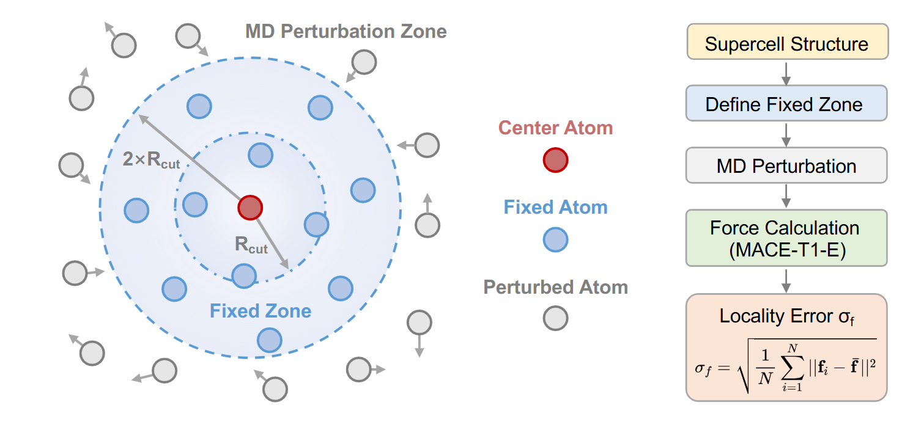

Sep 7, 2026
New Publication in npj Energy Mater.

We are pleased to announce that our latest research paper has been accepted for publication in npj Energy Mater.. Machine learning force fields enable high-accuracy modeling of solid-state electrolytes (SSEs). This perspective evaluates dataset size, reference quality, and model architectures. We show that crystalline frameworks of bulk SSEs favor efficient learning, prioritizing data quality over quantity. Crucially, force RMSE does not reliably predict transport performance. By analyzing locality and benchmarking frameworks, we provide practical guidelines for modeling bulk SSEs to accelerate the development of next-generation solid-state batteries.
Title: A Perspective on Training Machine Learning Force Fields for Solid-State Electrolyte Materials
Journal: npj Energy Mater. 2026, 1, 14